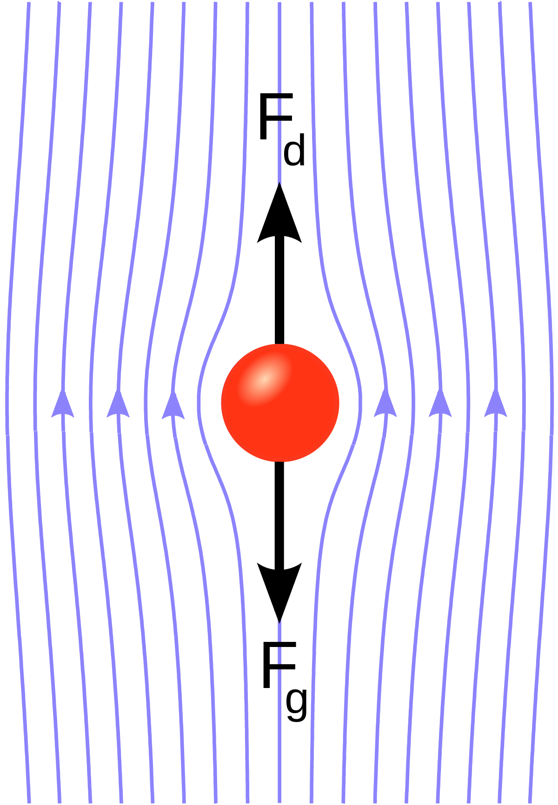

Viscous Flows
Contents
Viscous Flows¶
Viscous Stress Tensor and the Viscous Force¶
Viscosity is a measure of of fluid “friction” – the resistance a material has to being deformed by sheer stress. Shear stresses can be pointing in every direction, but has a spatial gradient.
Water is wet. What does this mean? It really means that it’s viscous at the molecular level! Without viscosity, you would come out of a swimming pool totally dry. Can we “derive” viscosity from first principles? Kinda of.…
Heuristic: Miscroscopic/Molecular Origin of Viscosity¶
Viscosity arises from diffusive momentum transfer due to particle scattering. Consider a shear flow \(\vec v = v_y(x)\hat{y}\). Note in the diagram below, the axes are labelled wrong. Rotate by 90 degrees. Consider the forces on a volume element \(A \cdot \Delta x\).
Consider sitting at \(x\), which is one of the flow arrows in the diagram below. At location \(x\), particles receive momentum transfer from those at \(x - \frac{l}{2}\) and \(x+\frac{l}{2}\) where \(l\) is the mean free path, and adjacent fluid elements are spearated by \(\Delta x \gg l\).
{kind=link}
Now consider particles at \(x+ \frac{l}{2}\), which have \(\hat{y}\)-momentum of: \(mv_y\left(l+\frac{l}{2}\right)\).
Now consider particles at \(x- \frac{l}{2}\), which have \(\hat{y}\)-momentum of: \(mv_y\left(l-\frac{l}{2}\right)\).
1. Thus the net \(\hat{y}\)-momentum transfer per particle across the boundary \(x\) is:
2. We want to consider the flux, now. We need the number of particles per unit time passing through \(x\). This is simpy:
is the typical thermal speed of these particles.
Together, these two points give the net momentum transfer through \(\hat{x}\):
Remind yourself what the time derivative of momentum is – it’s a force! We can now consider the net force between adjacent fluid elements.
The viscous force is the net force on element \(A \cdot \Delta x\) by surrounding fluids. Thus,
We can use our expression for \(p_y(x)\) from above. This gives:
And now the viscous force per unit volume can be written as:
where \(\rho = mn\) is the mass density, and \(\nu = l v_{th}\) is the kinematic viscosity and has units of \(\text{cm}^{2} \text{ s}^{-1}\). Sometimes, we combine terms even more:
where \(\eta\) is called the dynamic viscosity. In this re-arrangment, we can write:
And lastly, we can group together the parentheses, giving:
where
is called the viscous/shear stress “tensor.”
This derivation is almost correct, but not quite the whole story.
Constructing the Viscous Stress Tensor¶
Let’s try to contrusct the tensor from the start, with the condition that it is linear in the velocity gradient. This means:
The most general form is thus:
We can now apply some conditions to constraing \(\alpha\) and \(\beta\).
1. We know that \(\sigma_{ij} = 0\) for a uniform, solid-body under rotation, i.e., no shearing/viscous force. For uniform rotation, we have:
where \(\phi\) is the polar-coordinate direction in the \(x,y\) plane. Recall as well that: \(\hat{r} = \cos \phi \hat{x} + \sin \phi \hat{y}\) and \(\hat{\phi} = -\sin \phi \hat{x} + \cos \phi \hat{y}\). Let’s use this:
Let’s now look at the component \(\sigma_{xy}\):
2. Isotropically expanding fluid (Hubble Flow). In this case, we ALSO know that \(\sigma_{ij} = 0\). The flow is radially outward, and thus we have no shear. In this case, we have \(\vec v \propto \vec r \propto x \hat x + y \hat y + z \hat z\). We can immediately see that the ineresting case has \(\sigma_{xx}\) or the like. All other terms vanish. We have:
And thus:
3. We are finished! Let’s collect our results. We just showed that:
Note that this is a traceless tensor of rank 2.
Applications: Examples of Viscous Flows¶
Example 1: Poiseuille Flow¶
This describes laminar, non-turbulent, constant flow of an incompressible uniform viscous fluid through a tube of constant cross section. An example of this would be blood flow in veins.
We start with the Navier-Stokes equation.
Thus, our equation to solve is:
Let’s take the flow to be along the z-direction \(\hat{z}\). Let’s let the velocity depend on \(x\) and \(y\), though. Thus:
{kind=link}
By constuction, we have:
but
The left-hand side of the N.S. equation becomes:
Thus, the right-hand side of the N.S. equation must be \(0\):
Remember that \(\rho \nu\) is the same thing as the kinematic viscosity \(\eta\). Thus:
This is the same as:
Notice that the left-hand side has no \(z\) dependence. Thus, \(\partial_z P\) has to be a constant!
The right-hand side has no \(x\) or \(y\) dependence since \(v_x\) and \(v_y\) are zero by construction. Thus:
We now look at the cross-section of the tube, and want to solve for the velocity profile.
We thus have:
Thus:
Simplifying and integrating one more time:
We now impose boundary conditions – one at the center and one at the boundary of the tube.
1. At \(v(R=0)\), we want \(v\) to be finite. This implies that \(a=0\) since \(\ln R\) grows to infinity.
2. At \(v(R=R)\), we want the fluid to have no velocity. The only way for this to work out is for:
What does this mean, actually?
We have a parabolic velocity profile!
The maximum velocity is at the center of the tube.
The maximum speed depends on the width of the tube. We have \(V_{MAX} \propto R_0^2\). The wider the tube, the faster the flow.
{kind=link}
Lastly, we can calculate the mass flux through the tube. To do this, we calculate:
We have:
Thus:
And thus:
This is interesting! Because our speed is not constant, we have the mass flux scaling with \(R_0^4\), whereas we would expect it to scale with \(R_0^2\). The extra factors of \(R\) come from the velocity profile. The wider the tube, the less the flow at the center is affected by flow at the boundary.
What’s the lesson here? The lesson is to keep your arteries open.
Example 2: Stokes Flow/”Creeping” Flow¶
In this case, we are measuring the drag force on a sphere of radius \(a\) moving through a viscous fluid at low \(\mathcal{R}\). This looks like:
{kind=link}
Consider a sphere of density \(\rho_s\) and fluid of density \(\rho_f\). The viscosity is given by \(\nu = \rho_f \eta\). The Stoke’s Law gives us the drag force in terms of these parameters:
In a gravitational field \(\vec g\), a falling sphere can reach terminal velocity. The terminal speed is:
We can also show that:
and
An Aisde¶
Millikan had oil dropping in air, allowing the oil to fall between two metal plates. We can reach the terminal velocity with the oil, and the electric field will accelerate the oil drops upward. By applying a known \(\vec E\), Millikan can calculate the electric charge-to-mass ratio of the electron!
Accretion Disks¶
Astrophysical disks are ubiquitous. This is primarily because of angular momentum. The locations of these disks can be found:
around planets
around stars
around black holes
around neutron stars
When accreted gas has a non-zero \(\vec L\), it generally forms an accretion disk. How does the gas inside this disk redistribute itself? If the gas loses angular momentum, the gas migrates inward. We can lose angular momentum via, for example, radiating energy away with photons, viscous torques, etc.
The goal of today is to get to the time-evolution equation for a flattened, idealized, axisymmetric disk. How does a ring of gas evolve in the presence of viscosity?
Consider an axisymmetric, thin disk (i.e., symmetry about \(\varphi\)). We will use cylindrical coordinates, with \(\hat z\) out of the disk plane. The disk rotation is thus: \(\vec \Omega = \Omega \hat{z}\). Axisymmetry tells us that:
We will also ignore the vertical spread (i.e., we have a razor thin disk) (we can thus ignore \(v_z\)). We are intersted in:
The orbital motion is \(v_\varphi\) and the radial motion is \(v_R\), but subject to viscous forces, do these to decay?
We will also asssume that the central object (whatever it may be) is already in place, and thus we can ignore self-gravity.
Solving the problem…¶
Continuity¶
Let’s start with the continuity equation. We did this before for a disk, and we get:
Where \(\Sigma = \int \rho dz\).
We can show that:
We want to know a few things:
Inward mass accretion rate (across R) of a ring at distance \(R\) onto central object
The mass of this ring is \(\Delta M = \rho 2\pi R \Delta R \Delta z\). The mass rate moving across \(R\) is thus:
And so:
And we know that \(\rho \cdot dz\) is just \(\Sigma\), so:
Note that we have chosen our sign such that \(\dot{M} > 0\) for inflow (the \(v_R\) is less than \(0\)). Thus all the action is going to be solving for \(v_R\)!
Some comments….
1. For incompressible fluids, \(\vec \nabla (\vec \nabla \cdot \vec v) = 0\).
2. Viscosity shows up in the momentum equation as a diffusion term, e.g.:
This should remind us of the drunkard’s walk, which makes sense since this comes from molecular momentum transfer. The typical form of the solution for 1D diffusion is:
3. You can add a traceful term into \(\sigma_{ij}\) which manifests as a bulk-viscosity. We do this by:
for some phenomenonological forces.
4. Kinematic Viscosity \(\nu\) (diffusion coefficient with units of length squared over time) for some materials at room temperature:
Water has \(\nu = 0.01 \text{ cm}^2 \text{ s}^{-1}\)
Air has \(\nu = 0.01 \text{ cm}^2 \text{ s}^{-1}\)
Oil has \(\nu = 1\text{ cm}^2 \text{ s}^{-1}\)
Syrup has \(\nu \sim 1000\text{ cm}^2 \text{ s}^{-1}\)